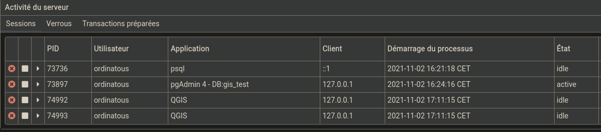

Ravail en cours..
Pour bénéficier du support des informations geospatiale , il faut créer une extension postgis dans la base de données.
Ces informations géospatiale sont des points , des lignes et des polygones, qui sont définis par des coordonnées .
Cela ce fait simplement avec la commande CREATE EXTENSION :
gis_test=# create extension postgis;
CREATE EXTENSION
gis_test=#
On peut voir l’extension dans l’explorateur de pgAdmin:
Il en existe d’autres:
gis_test=# CREATE EXTENSION
address_standardizer insert_username "postgis_raster-3"
"address_standardizer-3" intagg postgis_sfcgal
address_standardizer_data_us intarray "postgis_sfcgal-3"
"address_standardizer_data_us-3" isn postgis_tiger_geocoder
adminpack lo "postgis_tiger_geocoder-3"
amcheck ltree postgis_topology
autoinc moddatetime "postgis_topology-3"
bloom pageinspect postgres_fdw
btree_gin pg_buffercache refint
btree_gist pgcrypto seg
citext pg_freespacemap sslinfo
cube pg_prewarm tablefunc
dblink pgrowlocks tcn
dict_int pg_stat_statements tsm_system_rows
dict_xsyn pgstattuple tsm_system_time
earthdistance pg_trgm unaccent
file_fdw pg_visibility "uuid-ossp"
fuzzystrmatch "postgis-3" xml2
hstore postgis_raster
gis_test=# CREATE EXTENSION
Connectons QGIS à la base gis_test , en faisant un clic droit sur postgis dans l’explorateur:
Puis accédons au gestionnaire de base de données:
Nous constatons que des colonnes geography et geometry ont été définis, ainsi qu’un référentiel spatial.
On trouve dans qgis un assistant de création de table, qui nous rappellera de définir une géométrie:
Petit retour sur pgAdmin , qui nous donne vue sur les connexions, qui, quelles applications:

Ce travail est sous licence Attribution-NonCommercial 4.0
International.